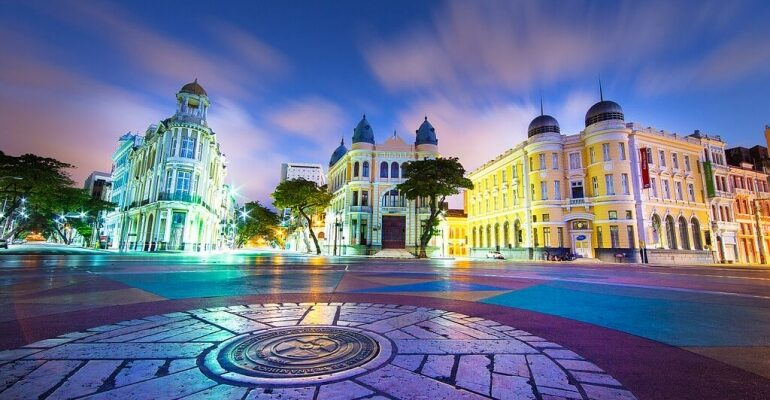
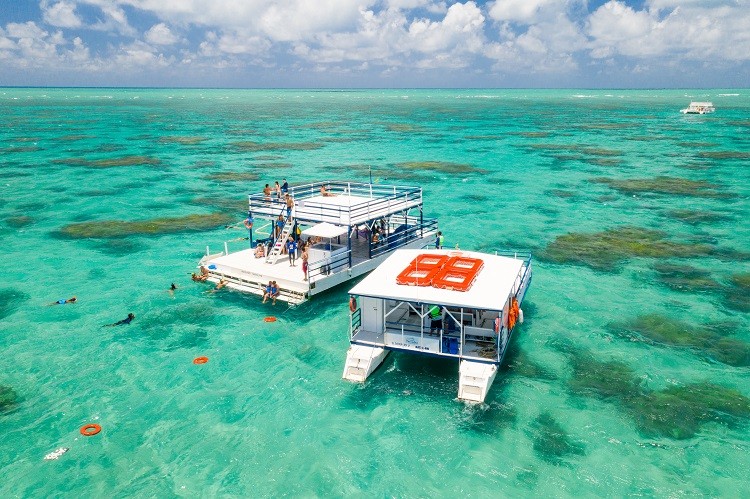

Marco Zero
O Marco Zero, localizado na Praça Rio Branco, é o ponto de fundação do Recife e o marco inicial para a contagem das distâncias na cidade. É um local histórico e culturalmente significativo, especialmente movimentado durante o Carnaval. Os visitantes podem apreciar a vista para o Parque de Esculturas e explorar o Mercado de Artesanato nas proximidades.
Museu Paço do Frevo

O Museu Paço do Frevo é um centro cultural dedicado à preservação e promoção do frevo, um ritmo e dança tradicionais de Pernambuco. Oferece exposições, oficinas e atividades interativas que celebram a história e a cultura do frevo. Localizado no Recife Antigo, o Paço do Frevo é um espaço vibrante onde visitantes podem vivenciar a energia e a criatividade dessa expressão artística.
Passeio de Catamarã
O Passeio de Catamarã pelo Recife e suas pontes oferece uma experiência única de navegação pelo Rio Capibaribe, permitindo aos visitantes apreciar a arquitetura histórica das pontes e edifícios coloniais, além de proporcionar uma visão panorâmica de pontos turísticos como o Marco Zero e a Ponte Maurício de Nassau, tudo em um ambiente relaxante e culturalmente rico.